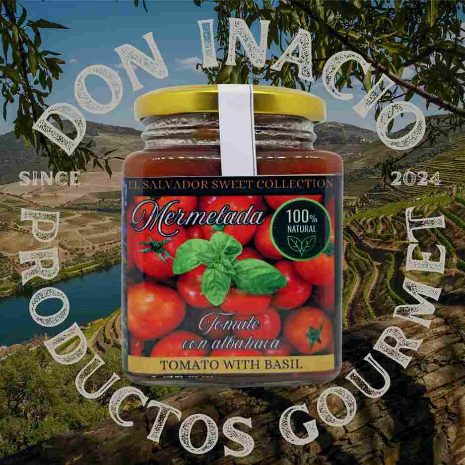
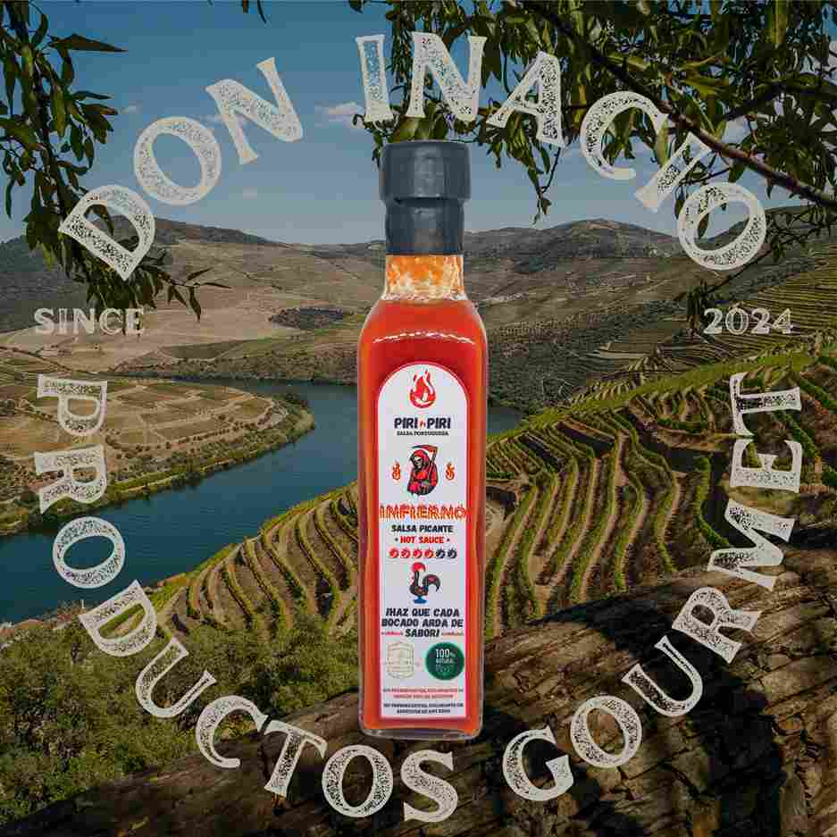
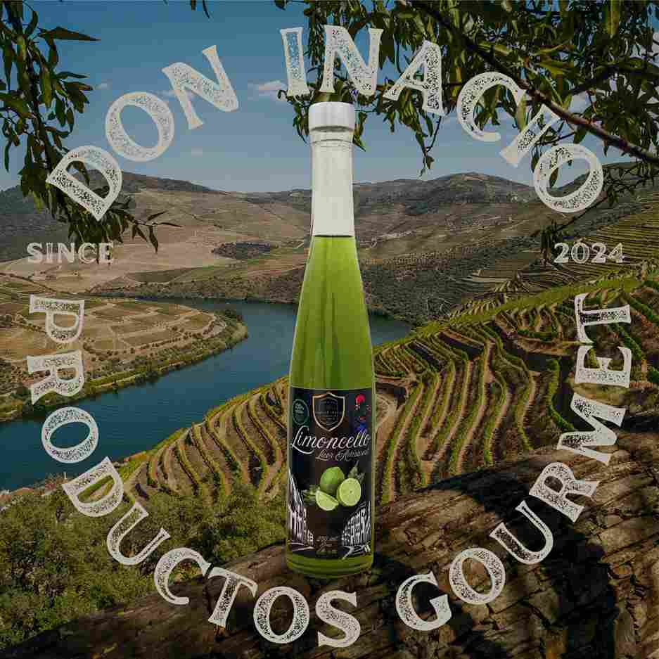
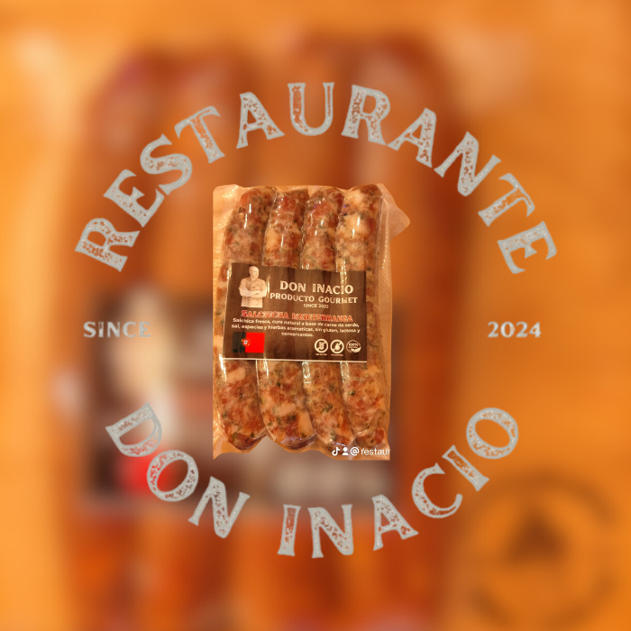
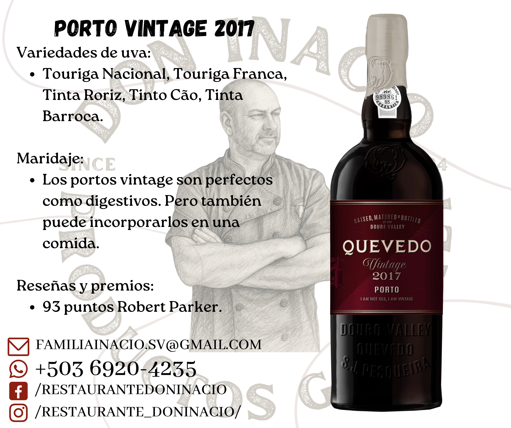

Descubre la excelencia en cada uno de nuestros productos elaborados con pasión

ArtesanalNuestras Mermeladas artesanales... elaboradas con frutas naturales, sin conservantes, con un sabor auténtico y equilibrado, ideales para desayunos, postres y tablas gourmet, siguiendo recetas tradicionales.

PicanteSalsas elaboradas con chiles frescos y especias naturales, ideales para darle un toque intenso a tus platillos, disponibles en distintos niveles de picante y con sabor auténtico.

PremiumLicores artesanales preparados con frutas y hierbas, de aroma y sabor suave y natural, perfectos para disfrutar solos o en cócteles, elaborados mediante procesos artesanales.
 Curado
Curado
Embutidos de curación tradicional, con sabor intenso y textura firme, ideales para degustar, perfectos para acompañar con quesos y vinos, madurados cuidadosamente.
 Cocido
Cocido
Embutidos frescos de sabor suave, cocidos al punto, listos para consumir, ideales para bocadillos, ensaladas y preparaciones rápidas, con ingredientes de calidad.

FrescoSalchichas frescas con especias seleccionadas, sabor tradicional, perfectas para la parrilla, asadas o a la plancha, jugosas y de excelente calidad.
 Natural
Natural
Salsa de tomate natural, 100% artesanal, con tomates frescos, sin aditivos ni conservantes artificiales, preparada con recetas tradicionales para realzar tus platos.

SelecciónNuestra selección de vinos cuidadosamente elegidos, tintos, blancos y especiales, perfectos para maridar con nuestros platos y productos, de las mejores bodegas.
Santa Ana, El Salvador
Lunes - Domingo: 11:00 AM - 10:00 PM
+503 7276 0109
Cocina portuguesa artesanal y productos gourmet